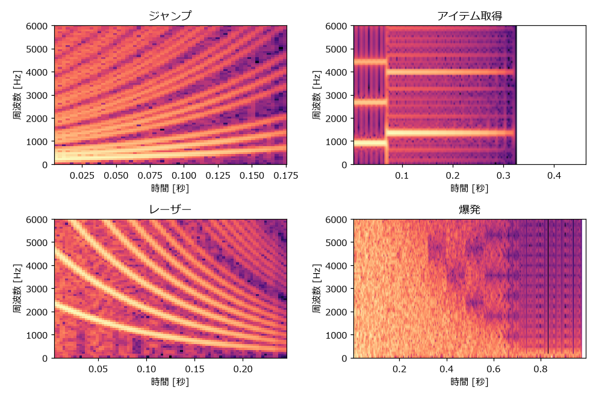

8. 効果音を作る
この章では、前の章までに作った部品を組み合わせて、ゲームでよく使う効果音を作る。効果音は短く、単音で完結するものが多いため、作ってすぐに結果を確かめられる。
8.1. 効果音設計の考え方
8.1.1. 効果音の役割
ゲームの効果音の最も重要な役割は、プレイヤーに「何が起きたか」を伝えることである。ボタンを押したら決定音が鳴り、敵の攻撃が当たったらダメージ音が鳴る。音が鳴ることで、プレイヤーは画面を注視していなくても状況を把握できる。
そのため、効果音には次の性質が求められる。
短い: 操作への反応として鳴る音は、長くても 0.5 秒程度に収める（爆発やパワーアップなど、演出として聞かせる音は例外）。同じ音が連続して鳴ることも多いため、長い音は重なって聞き取りにくくなる。
区別しやすい: 意味の異なる音は、音程の動きや波形を変えて、聞いてすぐに区別できるようにする。
意味と結び付いている: 音程が上がる音は「成功」「獲得」「前進」を、下がる音は「失敗」「損失」「取り消し」を連想させる。この対応を利用すると、初めて聞く音でも意味が伝わりやすい。
聞き疲れしない: 頻繁に鳴る音（足音、カーソル移動など）は、短く、音量を控えめにする。高すぎる音や鋭すぎる音は、繰り返し聞くと不快になりやすい。
8.1.2. 効果音を作る 3 つの要素
本書の効果音は、どれも次の 3 つの要素の組み合わせでできている。
要素 |
選択肢 |
使う関数 |
|---|---|---|
波形 |
矩形波（デューティ比）、三角波、ノイズ（周期、モード） |
|
音程の変化 |
一定、スイープ、ビブラート、アルペジオ、複数の音の連結 |
|
音量の変化 |
一定、減衰、ADSR |
|
次の表に、この章で作る効果音の設計をまとめる。
効果音 |
波形 |
音程の変化 |
音量の変化 |
|---|---|---|---|
ジャンプ |
矩形波 25 % |
180 Hz から 700 Hz へ上昇（0.18 秒） |
減衰（period = 2） |
アイテム取得 |
矩形波 50 % |
A5 から E6 へ切り替え |
2 音目だけ減衰（period = 3） |
決定 |
矩形波 12.5 % |
C6 から G6 へ切り替え |
減衰（period = 1） |
キャンセル |
矩形波 50 % |
G5 から C5 へ切り替え |
減衰（period = 1） |
被ダメージ |
矩形波 50 % とノイズ |
900 Hz から 80 Hz へ下降（0.3 秒） |
減衰 |
爆発 |
ノイズ |
周期を徐々に長くする（音が低くなる） |
指数関数的な減衰（1 秒） |
レーザー |
矩形波 12.5 % |
2400 Hz から 300 Hz へ下降（0.25 秒） |
減衰（period = 3） |
パワーアップ |
矩形波 50 % |
長三和音のアルペジオで根音を上げていく |
直線的な減衰 |
回復 |
三角波 |
C5、E5、G5、C6 と上昇、ビブラート付き |
一定 |
8.2. 各効果音の作り方
ここからは、効果音を 1 つずつ作っていく。いずれの関数も sound_effects.py にある。
8.2.1. ジャンプ
ジャンプの音は、音程が素早く上がる矩形波で作る。上昇する音程が、体が上に向かう動きを表す。デューティ比 25 % の少し細い音色にすると、軽快な印象になる。
16def jump() -> Signal:
17 """ジャンプ: 音程が素早く上がる矩形波."""
18 freq = exponential_sweep(180.0, 700.0, 0.18)
19 volume = nes_decay(0.18, 2)
20 return pulse_wave(phase_from_frequency(freq, freq.size), 0.25) * volume
ジャンプ
8.2.2. アイテム取得
アイテム取得の音は、短い音の直後に高い音を伸ばす 2 音で作る。2 音目を 1 音目より高くすることで、「獲得した」という前向きな印象になる。ここでは 1 音目を A5、2 音目を 5 度上の E6 にしている。
23def coin() -> Signal:
24 """アイテム取得: 短い音の直後に 5 度上の音を伸ばす."""
25 first = pulse_wave(phase_from_frequency(note_frequency(note_number("A5")), seconds_to_samples(0.07)), 0.5)
26 second_length = 0.4
27 second = pulse_wave(phase_from_frequency(note_frequency(note_number("E6")), seconds_to_samples(second_length)), 0.5)
28 return np.concatenate([first, second * nes_decay(second_length, 3)])
np.concatenate は、複数の配列を順につなげる関数である。
アイテム取得
8.2.3. 決定とキャンセル
メニュー操作の決定音とキャンセル音は、対になるように作る。決定は上昇する 2 音、キャンセルは下降する 2 音にする。さらに、決定は細い矩形波（12.5 %）、キャンセルは太い矩形波（50 %）にして、音色でも区別できるようにしている。
31def select() -> Signal:
32 """決定: 細いパルス波で上昇する 2 音."""
33 parts = [
34 pulse_wave(phase_from_frequency(note_frequency(note_number(name)), seconds_to_samples(length)), 0.125)
35 * nes_decay(length, 1)
36 for name, length in (("C6", 0.05), ("G6", 0.1))
37 ]
38 return np.concatenate(parts)
41def cancel() -> Signal:
42 """キャンセル: 下降する 2 音. 決定と対になるよう音程の動きを逆にしている."""
43 parts = [
44 pulse_wave(phase_from_frequency(note_frequency(note_number(name)), seconds_to_samples(length)), 0.5)
45 * nes_decay(length, 1)
46 for name, length in (("G5", 0.05), ("C5", 0.1))
47 ]
48 return np.concatenate(parts)
決定
キャンセル
8.2.4. 被ダメージ
ダメージを受けた音は、急降下する矩形波に短いノイズを重ねて作る。下降する音程が「損失」を、ノイズが「衝撃」を表す。
51def damage() -> Signal:
52 """被ダメージ: 急降下する矩形波に短いノイズを重ねる."""
53 seconds = 0.3
54 freq = exponential_sweep(900.0, 80.0, seconds)
55 tone = pulse_wave(phase_from_frequency(freq, freq.size), 0.5) * nes_decay(seconds, 3)
56 noise = noise_wave(seconds, 5) * nes_decay(seconds, 0)
57 return 0.7 * tone + 0.5 * noise
2 つの音を重ねるときは、それぞれに係数（ここでは 0.7 と 0.5）を掛けて音量のバランスを取る。
被ダメージ
8.2.5. 爆発
爆発の音はノイズで作る。鳴り始めは高い成分を多く含む激しい音にし、時間とともにノイズの周期を長くして低い「ゴー」という音へ変えていく。音量はゆっくりと減衰させる。
60def explosion() -> Signal:
61 """爆発: ノイズの周期を徐々に長く（音を低く）しながら、ゆっくり減衰させる."""
62 seconds = 1.0
63 num_samples = seconds_to_samples(seconds)
64 # 周期インデックスを 6 から 15 へ時間とともに大きくする
65 t = np.arange(num_samples) / SAMPLE_RATE
66 index = np.minimum(6 + np.floor(t / 0.08), 15).astype(np.int64)
67 rate = CPU_CLOCK / np.array(NOISE_PERIODS, dtype=np.float64)[index]
68 volume = quantize_volume(np.exp(-3.5 * t))
69 return noise_from_rate(rate, num_samples) * volume
周期インデックスを 6 から始め、0.08 秒ごとに 1 つずつ大きくしている（最大 15）。インデックスの配列から LFSR の更新頻度の配列を作り、noise_from_rate に渡す。音量は \(e^{-3.5t}\) で減衰させ、16 段階に丸めている。
爆発
8.2.6. レーザー
レーザーの音は、細い矩形波で高い音から一気に下げて作る。デューティ比 12.5 % の鋭い音色と、急激な下降の組み合わせが、ビームが飛んでいく感じを表す。
72def laser() -> Signal:
73 """レーザー: 細いパルス波で高い音から一気に下げる."""
74 seconds = 0.25
75 freq = exponential_sweep(2400.0, 300.0, seconds)
76 return pulse_wave(phase_from_frequency(freq, freq.size), 0.125) * nes_decay(seconds, 3)
レーザー
8.2.7. パワーアップ
パワーアップの音は、長三和音のアルペジオを、根音を C5、D5、E5、F5 と上げながら鳴らして作る。明るい和音と段階的な上昇で、力が高まっていく様子を表す。
79def power_up() -> Signal:
80 """パワーアップ: 長三和音のアルペジオで音程を段階的に上げていく."""
81 seconds = 0.8
82 parts = []
83 for root in ("C5", "D5", "E5", "F5"):
84 freq = arpeggio(note_number(root), [0, 4, 7, 12], seconds / 4, step=1.0 / 60.0)
85 parts.append(pulse_wave(phase_from_frequency(freq, freq.size), 0.5))
86 body = np.concatenate(parts)
87 return body * quantize_volume(np.linspace(1.0, 0.3, body.size))
パワーアップ
8.2.8. 回復
回復の音は、やわらかい三角波で和音の構成音を順に上昇させて作る。軽いビブラートをかけて、きらめくような印象を加えている。三角波は音量を変えられないので、音量は一定のままである。
90def heal() -> Signal:
91 """回復: ビブラートをかけた三角波でやわらかく上昇させる."""
92 parts = []
93 for name in ("C5", "E5", "G5", "C6"):
94 freq = vibrato(note_frequency(note_number(name)), 0.15, depth=0.2, rate=12.0)
95 parts.append(triangle_wave(phase_from_frequency(freq, freq.size)))
96 return np.concatenate(parts)
回復
8.3. スペクトログラムで確かめる
音の周波数成分が時間とともにどう変化するかを表した図をスペクトログラムという。横軸が時間、縦軸が周波数で、明るい色ほどその周波数の成分が強いことを表す。図 8.1 に、作った効果音のスペクトログラムを示す。


図 8.1 効果音のスペクトログラム
ジャンプとレーザーでは、基音と倍音が並んで上昇または下降している様子がわかる。アイテム取得では、0.07 秒の時点で音程が切り替わっている。爆発では、時間とともに高い周波数の成分が弱まっていく。
ジャンプの図には、上昇する線の間を右下がりに横切る線も見える。これは「Python で波形を作る」で述べたエイリアシングの成分である。
8.4. 乱数で効果音を探す
効果音のパラメータを乱数で決めて、たくさんの候補を自動で作る方法もある。2007 年に公開された効果音生成ツール sfxr は、この方法で手軽に効果音を作れることから広く使われた（「制作ツールの紹介」で紹介する）。
99def random_effect(rng: np.random.Generator) -> Signal:
100 """パラメータを乱数で決めて効果音を作る（sfxr と同じ考え方）."""
101 seconds = float(rng.uniform(0.1, 0.5))
102 start = float(rng.uniform(150.0, 2000.0))
103 end = start * float(2.0 ** rng.uniform(-3.0, 2.0))
104 duty = float(rng.choice([0.125, 0.25, 0.5]))
105 decay_period = int(rng.integers(1, 6))
106 freq = exponential_sweep(start, end, seconds)
107 return pulse_wave(phase_from_frequency(freq, freq.size), duty) * nes_decay(seconds, decay_period)
長さ、開始周波数、終了周波数、デューティ比、減衰の速さを乱数で決めている。終了周波数は、開始周波数の \(2^{-3}\) 倍から \(2^{2}\) 倍の範囲（3 オクターブ下から 2 オクターブ上）でランダムに決める。np.random.default_rng(seed=8) のように乱数の種（seed）を固定すると、毎回同じ候補が生成される。
乱数で作った効果音 1
乱数で作った効果音 2
乱数で作った効果音 3
乱数で作った音がそのまま使えることは少ないが、思いがけない音に出会えることがある。気に入った候補が見つかったら、そのパラメータを手で調整して仕上げるとよい。
8.5. 調整のコツ
効果音を作るときは、次の点に注意すると仕上がりがよくなる。
ゲームの画面と合わせて聞く: 効果音だけを聞いて良い音でも、ゲームの動きと合わせると長すぎたり軽すぎたりすることがある。最終的な判断は、ゲームに組み込んで行う。
全体の音量をそろえる:
generate関数では、すべての効果音をnormalizeで最大振幅 0.5 にそろえている。ただし、最大振幅が同じでも、長く鳴る音や倍音の多い音は大きく聞こえる。実際に聞いて、個別に調整する。BGM と周波数帯を分ける: BGM のメロディと同じ高さの効果音は、BGM に埋もれて聞き取りにくい。効果音はメロディより高めにするか、ノイズなど BGM と異なる音色を使う。
少しずつ変える: 同じ効果音を何度も鳴らす場合、毎回わずかに音程を変える（例えば ±1 半音の範囲でランダムに変える）と、単調さが和らぐ。
8.6. サンプル音の生成
この章の効果音は、次のコマンドで output フォルダに書き出される。
1python sound_effects.py
8.7. 練習
jump関数のスイープの範囲と長さを変えて、大ジャンプと小ジャンプの音を作り分けてみよう。explosion関数でnoise_from_rateにshort_mode=Trueを渡すと、どのような爆発音になるか確かめてみよう。階段を上る足音、扉が開く音、ゲームオーバーの短いジングルなど、自分でテーマを決めて効果音を設計してみよう。設計は、上の「効果音の設計」の表と同じ形式で書き出してから実装するとよい。